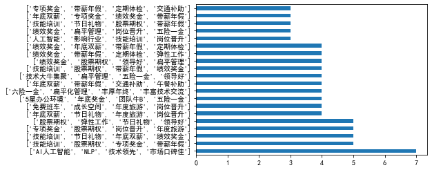

1 2 3 4 5 6 7 8 9 10 11 12 13 14 # 原作者链接：https://www.jianshu.com/p/24913ef14750 import json import numpy as np import pandas as pd import matplotlib.pyplot as plt plt.rcParams['font.sans-serif'] = ['SimHei'] # 用来正常显示中文标签 plt.rcParams['axes.unicode_minus'] = False # 用来正常显示负号 %matplotlib inline df=pd.read_csv("lagou.csv",) data=df[df["companyLabelList"]!="[]"] data["companyLabelList"].value_counts()[:20].plot(kind="barh") plt.show() #显示图片

1 2 3 4 5 6 7 8 9 10 11 import json import numpy as np import pandas as pd import matplotlib.pyplot as plt plt.rcParams['font.sans-serif'] = ['SimHei'] # 用来正常显示中文标签 plt.rcParams['axes.unicode_minus'] = False # 用来正常显示负号 %matplotlib inline df=pd.read_csv("lagou.csv",) df.info()#没有缺失值
<class 'pandas.core.frame.DataFrame'>
RangeIndex: 450 entries, 0 to 449
Data columns (total 11 columns):
positionId 450 non-null int64
city 450 non-null object
companyFullName 450 non-null object
companyLabelList 450 non-null object
district 450 non-null object
education 450 non-null object
firstType 450 non-null object
formatCreateTime 450 non-null object
positionName 450 non-null object
salary 450 non-null object
workYear 450 non-null object
dtypes: int64(1), object(10)
memory usage: 38.8+ KB1 2 3 4 5 6 7 8 9 10 11 12 13 # 城市python岗位的需求量 import seaborn as sns count_by_city=df.groupby(["city"])["city"].count() ax=plt.figure(figsize=(10,8)).add_subplot(111) sns.barplot(count_by_city.index, count_by_city.values, alpha=0.8) ax.set_ylim([0,200]) ax.set_xlabel("城市",fontsize=20) ax.set_ylabel("职位数量",fontsize=20) ax.set_title('城市python岗位的需求量', size=24) for x,y in zip(range(len(df)),count_by_city.values): ax.text(x,y,"%d"%y,ha="center",va="bottom",fontsize=16,color="r")
1 2 3 4 5 6 7 8 9 10 11 12 13 14 15 16 # 取最小值为薪酬值 import seaborn as sns def avg_salary(salary): salary_list = salary.split('-') salary_min = salary_list[0][:-1] return salary_min df['salary_min'] = df['salary'].apply(avg_salary).astype(int) ax4 = plt.figure(figsize=(10, 6)).add_subplot(111) sns.distplot(df['salary_min'], kde=False, bins=30) ax4.set_title('薪酬分布', fontsize=22) ax4.set_xlabel('薪酬（K/月）', fontsize=18) ax4.set_xticks(range(5, 60, 5)) plt.show()
1 2 3 4 5 6 7 8 9 10 11 # 学历要求 count_by_education=df["education"].value_counts() ax8 = plt.figure(figsize=(10, 8)).add_subplot(111) sns.barplot(count_by_education.index, count_by_education.values, alpha=0.8) ax8.set_title('学历要求分布', fontsize=22) ax8.set_xlabel('学历', fontsize=20) ax8.set_ylabel('') for x,y in zip(range(4),count_by_education.values): ax8.text(x,y,"%d"%y,ha="center",va="bottom",fontsize=16,color="r")
1 2 3 4 5 6 7 8 9 10 11 12 13 # 薪酬比较 group_by_city = df.groupby(['city'])['salary_min'] df_city = [] for group in count_by_city.index: v = group_by_city.get_group(group).values df_city.append(v) ax5 = plt.figure(figsize=(15, 6)).add_subplot(111) sns.boxplot(data=df_city) ax5.set_xticklabels(count_by_city.index, fontsize=15) ax5.set_title('薪酬比较', fontsize=22) ax5.set_ylabel('薪酬K/月', fontsize=20) plt.show()
1 2 3 4 5 6 7 8 9 10 11 12 13 14 15 16 17 18 # 待遇福利 import re import pyecharts from pyecharts import WordCloud tmp_list=[] def resolution(companyLabelList):#分解 c_list = companyLabelList.split(',') for i in c_list: cc = i.replace("'","").replace("[","").replace("]","") if cc !="": tmp_list.append(cc.strip()) companyLabelList=df[df["companyLabelList"]!="[]"]["companyLabelList"].apply(resolution) word = pd.Series(tmp_list).value_counts() myWordCloud = WordCloud("绘制词云",width=1000, height=620) myWordCloud.add("",word.index,word.values,word_size_range=[20,100]) myWordCloud.render(path='5-01权重词云.html')